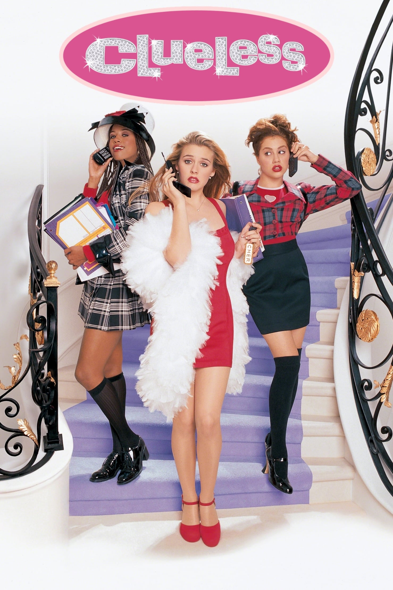

10 Cosas que Odio de Ti es una película que trata sobre las hermanas Stratford. Bianca es la chica popular e inalcanzable a la que todos admiran, mientras que su hermana mayor Kat es una chica malhumorada e ingeniosa a la que todos temen. La película cuenta la historia de cómo Cameron, un chico que hará todo lo posible por conquistar a Bianca, intenta encontrar a alguien que salga con Kat para poder salir con Bianca.
Clueless

Una comedia adolescente que cuenta la vida de Cher, una joven perteneciente a la alta sociedad de Beverly Hills, en el condado de Los Angeles, que junto con su mejor amiga Dionne lucha contra los problemas típicos de su edad, entre los que destacan las dudas referentes al amor, vestir bien, ser la más popular posible en el instituto… Sin embargo, la llegada de una nueva chica al grupo llamada Tai cambiará la vida de la joven.
La casa de cristal
Los Baker son una familia feliz, Dave el padre de familia es un prestigioso locutor de radio y vive junto a su esposa, Grace, y sus dos hijos, Ruby y Rhett. Ruby es una adolescente de 16 años alerta, madura y un tanto rebelde, mientras que Rhett es un niño de 11 años como cualquier otro. Sin embargo, en el aniversario número 20 del matrimonio Baker, la familia se ve envuelta en una tragedia cuando ambos mueren en un accidente de automóvil, dejando a los adolescentes Baker huérfanos.
Ella es el chico
La trama se centra en Viola Hastings, una jugadora de fútbol del instituto que decide suplantar a su hermano gemelo Sebastian para demostrar que tiene lo que hay que tener para jugar en el equipo de fútbol del instituto. La película es una adaptación contemporánea de la comedia de Shakespeare “Noche de Reyes”
Chicas pesadas
Cadey Heron (Lindsay Lohan) pasó los primeros 15 años de su vida en África y jamás ha ido a una escuela. Sus padres, dos zoólogos, se encargaron de educarla en casa mientras vivían en la jungla, rodeados por animales. Ahora están de vuelta en Estados Unidos y Cadey tendrá que enfrentarse a la realidad de una preparatoria norteamericana. Ahí comenzará a hacer nuevos amigos y recibirá una advertencia: no debe de acercarse a Regina George (Rachel McAdams), Gretchen Wieners (Lacey Chabert) y Karen Smith (Amanda Seyfried), las niñas más lindas y populares de la escuela, pero también las más malas. Cuando Regina comienza a buscar a Cadey para hacerla parte de su grupo las dos jóvenes se hacen amigas. Los problemas comenzarán cuando Aaron Samuels (Joanthan Bennett), el ex novio de Regina, se fije en Cadey y descubra que quienes dicen ser sus amigas tal vez no lo sean.
¿Por qué en mi opinion son mejores las peliculas de los 2000?
1- Son originales, ya que en esos tiempos intentaban probar con cosas nuevas, no como ahora que repiten demasiado el trama de peliculas de los 2000.
2- Las bandas sonoras que eran icónicas.
3- En las peliculas de los 2000 presentaban personajes más autenticos, no había tanta preocupación por la representación política o social.
4- Muchas películas de adolescentes de los años 2000 se centraron en la comedia, ofreciendo momentos divertidos y memorables. Estos filmes a menudo lograban equilibrar el humor con el drama de manera efectiva, creando experiencias cinematográficas más emocionantes y entretenidas.